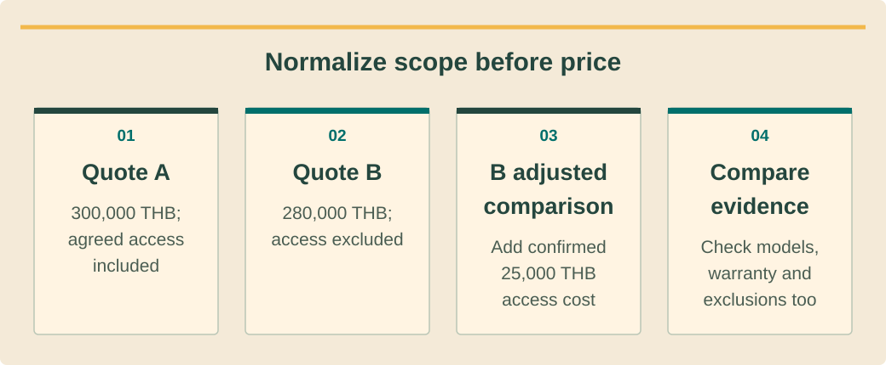

Sales and customer advisoryמכירות וייעוץ לקוחขายและให้คำปรึกษาลูกค้า · 6 / 9
Comparable proposals and warranty evidenceהשוואת הצעות וראיות אחריותเทียบข้อเสนอและหลักฐานรับประกัน
Compare complete scope instead of headline equipment prices.להשוות היקף מלא ולא מחירי כותרת.เทียบขอบเขตครบไม่ใช่ราคาอุปกรณ์หน้าแรก
What you will be able to doמה תדעו לעשותสิ่งที่คุณจะทำได้
- Normalize competing scopes.לאחד בסיס השוואת היקפים.ปรับข้อเสนอให้เทียบขอบเขตเดียวกัน
- Read model-specific warranty conditions.לקרוא תנאי אחריות לפי דגם.อ่านประกันตามรุ่น
- Explain residual customer costs.להסביר עלויות שנותרות ללקוח.อธิบายค่าใช้จ่ายที่ลูกค้ายังรับ
Normalize before judging priceמנרמלים לפני שיפוט מחירปรับฐานก่อนตัดสินราคา
Create one comparison sheet with system boundary, named equipment, design assumptions, installation work, access equipment, approvals support, commissioning and handover. Mark each item included, excluded or unclear. An unclear item is a question, not evidence that a competitor is dishonest.בנו טבלת השוואה עם גבול מערכת, ציוד, הנחות, התקנה, אמצעי גישה, תמיכה באישורים, הפעלה ומסירה. סמנו כלול, מוחרג או לא ברור. חוסר בהירות הוא שאלה ולא ראיה לחוסר יושר של מתחרה.ทำตารางขอบเขตระบบ รุ่นอุปกรณ์ สมมติฐาน งานติดตั้ง อุปกรณ์เข้าถึง ช่วยยื่นอนุมัติ ทดสอบ และส่งมอบ กำกับรวม ไม่รวม หรือไม่ชัด สิ่งไม่ชัดคือคำถาม ไม่ใช่หลักฐานว่าคู่แข่งไม่ซื่อสัตย์
Compare production and savings only after checking weather basis, shading, losses, load matching and tariff assumptions. A larger number may reflect a different baseline rather than better equipment. Ask for the calculation basis and preserve both original quotations alongside the normalized comparison.השוו ייצור וחיסכון אחרי בדיקת מזג אוויר, צל, הפסדים, התאמת עומס ותעריף. מספר גדול עשוי לנבוע מבסיס אחר ולא מציוד טוב יותר. בקשו בסיס חישוב ושמרו הצעות מקור ליד ההשוואה.เทียบผลิตและประหยัดหลังตรวจข้อมูลอากาศ เงา การสูญเสีย โหลด และอัตรา ตัวเลขสูงอาจมาจากฐานต่าง ไม่ใช่อุปกรณ์ดีกว่า ขอวิธีคำนวณและเก็บใบเสนอเดิมคู่ตารางที่ปรับแล้ว
Product warranty is not every serviceאחריות מוצר אינה כל השירותประกันสินค้าไม่ใช่บริการทุกอย่าง
Separate product defects, performance terms, installation workmanship and ongoing service. Ask who receives the claim, who diagnoses it, and who pays labor, transport and island travel. A manufacturer replacement commitment does not automatically include every local service cost.הפרידו פגמי מוצר, תנאי ביצועים, טיב התקנה ושירות שוטף. בררו מי מקבל תביעה, מי מאבחן ומי משלם עבודה, הובלה ונסיעה לאי. התחייבות יצרן להחלפה אינה כוללת אוטומטית כל עלות שירות מקומי.แยกข้อบกพร่องสินค้า เงื่อนไขสมรรถนะ ฝีมือติดตั้ง และบริการต่อเนื่อง ถามผู้รับเคลม ผู้วิเคราะห์ และผู้จ่ายค่าแรง ขนส่ง เดินทางเกาะ ผู้ผลิตเปลี่ยนสินค้าไม่ได้แปลว่าจ่ายบริการท้องถิ่นทั้งหมด
Use the exact model, market, purchase date and policy version supplied for the project. Huawei’s Global V 2.1 policy illustrates why conditions matter; it does not authorize a universal warranty claim for every product or supplier. Obtain the actual commercial documents.השתמשו בדגם, שוק, תאריך רכישה וגרסת מדיניות לפרויקט. מדיניות Huawei Global V2.1 מדגימה חשיבות תנאים; היא אינה מאפשרת הבטחת אחריות אחידה לכל מוצר או ספק. אספו מסמכים מסחריים בפועל.ใช้รุ่น ตลาด วันซื้อ และรุ่นนโยบายของโครงการ Huawei Global V2.1แสดงว่าทำไมเงื่อนไขสำคัญ ไม่ใช่ประกันสากลสำหรับสินค้าหรือผู้ขายทุกราย ขอเอกสารการค้าจริง
See the ideaרואים את הרעיוןมองเห็นแนวคิด
Normalize scope before priceמשווים היקף לפני מחירปรับขอบเขตให้เทียบกันก่อนราคา

Read the diagram as textקריאת התרשים כטקסטอ่านแผนภาพเป็นข้อความ
- Quote Aהצעה א׳ข้อเสนอ A — 300,000 THB; agreed access included300,000 באט; גישה מוסכמת כלולה300,000 บาท รวมงานเข้าถึงที่ตกลง
- Quote Bהצעה ב׳ข้อเสนอ B — 280,000 THB; access excluded280,000 באט; גישה לא כלולה280,000 บาท ไม่รวมงานเข้าถึง
- B adjusted comparisonב׳ להשוואה מתואמתB เมื่อปรับเพื่อเทียบ — Add confirmed 25,000 THB access costמוסיפים עלות גישה מאומתת: 25,000 באטบวกค่างานเข้าถึงยืนยันแล้ว 25,000 บาท
- Compare evidenceהשוואת ראיותเทียบหลักฐาน — Check models, warranty and exclusions tooבודקים גם דגמים, אחריות והחרגותตรวจรุ่น การรับประกัน และข้อยกเว้นด้วย
Find conditions that affect operationאיתור תנאים המשפיעים על הפעלהหาเงื่อนไขที่กระทบใช้งาน
A battery warranty may involve time, energy throughput, remaining capacity and operating conditions. Check which limit applies first and how a claim is tested. Do not substitute a marketing cycle count for the warranty that actually accompanies the purchased system.אחריות סוללה עשויה לכלול זמן, אנרגיה מצטברת, קיבולת נותרת ותנאי פעולה. בדקו איזה גבול חל ראשון וכיצד נבדקת תביעה. אין להחליף אחריות בפועל במספר מחזורים שיווקי.ประกันแบตเตอรี่อาจมีเวลา พลังงานสะสม ความจุคงเหลือ และเงื่อนไขใช้งาน ตรวจขีดใดถึงก่อนและทดสอบเคลมอย่างไร อย่าใช้จำนวนรอบโฆษณาแทนประกันที่มากับสินค้าจริง
Connectivity, registration, records and reporting obligations can affect coverage. Translate relevant obligations into customer handover tasks with an owner. If the supplied warranty requires an action, the proposal and commissioning plan should make that action achievable and visible.קישוריות, רישום, תיעוד ודיווח עשויים להשפיע על כיסוי. הפכו חובות רלוונטיות למשימות מסירה עם אחראי. אם אחריות דורשת פעולה, ההצעה ותוכנית ההפעלה צריכות לאפשר אותה ולהציג אותה.การเชื่อมต่อ ลงทะเบียน บันทึก และแจ้งเหตุอาจกระทบสิทธิ แปลงหน้าที่ที่เกี่ยวข้องเป็นงานส่งมอบพร้อมเจ้าของงาน ถ้าประกันต้องทำสิ่งใด ข้อเสนอและแผนเปิดระบบต้องทำได้และเห็นชัด
Explain total ownership exposureהסבר חשיפה כוללת לבעלותอธิบายภาระตลอดการถือครอง
List maintenance, insurance if chosen, potential replacement, roof access and removal/reinstallation assumptions separately. Treat future replacement timing as a scenario unless supported by a specific commitment. Warranty duration is not a promise of zero operating expense or guaranteed savings.רשמו בנפרד תחזוקה, ביטוח אם נבחר, החלפה אפשרית, גישת גג ופירוק והתקנה מחדש. מועד החלפה עתידי הוא תרחיש אלא אם מגובה בהתחייבות. משך אחריות אינו הבטחת אפס הוצאות או חיסכון.แยกบำรุงรักษา ประกันภัยถ้าเลือก การเปลี่ยนที่อาจเกิด เข้าหลังคา และรื้อติดใหม่ เวลาเปลี่ยนอนาคตเป็นสมมติฐานเว้นมีสัญญารองรับ อายุประกันไม่รับรองค่าใช้จ่ายศูนย์หรือประหยัดแน่นอน
Explain the comparison neutrally: which option includes more work, which assumptions are uncertain, and what the customer would need to buy separately. Ask the customer to confirm the scope they prefer before discussing a discount against a materially different alternative.הסבירו באופן ענייני איזו חלופה כוללת יותר עבודה, אילו הנחות פתוחות ומה צריך לרכוש בנפרד. בקשו בחירת היקף לפני דיון בהנחה מול חלופה שונה מהותית.อธิบายอย่างเป็นกลางว่าแบบใดรวมงานมากกว่า สมมติฐานใดยังไม่แน่ และลูกค้าต้องซื้อเพิ่มอะไร ให้ลูกค้ายืนยันขอบเขตก่อนคุยส่วนลดเทียบข้อเสนอที่ต่างกันมาก
Worked exampleדוגמה פתורהตัวอย่างพร้อมวิธีทำ
Two fictional island quotesשתי הצעות אי לדוגמהสองใบเสนอสมมติบนเกาะ
Quote A is THB 300,000. Quote B is THB 280,000 but excludes THB 25,000 of confirmed necessary access work. These are training numbers, not market prices.הצעה א׳ היא 300,000 באט. ב׳ היא 280,000 אך מחריגה עבודת גישה נחוצה ומאומתת של 25,000. אלה מספרי תרגול ולא מחירי שוק.A300,000บาท B280,000แต่ไม่รวมงานเข้าถึงที่ยืนยันจำเป็น25,000 ตัวเลขฝึกไม่ใช่ราคาตลาด
- Normalize B to THB 305,000 before comparing the common scope.מנרמלים ב׳ ל־305,000 לפני השוואת היקף משותף.ปรับBเป็น305,000ก่อนเทียบขอบเขตร่วม
- Check whether warranty service and commissioning are also equivalent.בודקים גם שקילות שירות אחריות והפעלה.ตรวจบริการประกันและทดสอบเปิดว่าเท่ากันหรือไม่
- Show original prices, adjustments and remaining questions.מציגים מקור, התאמות ושאלות שנותרו.แสดงราคาเดิม รายการปรับ และคำถามค้าง
B is THB 5,000 higher on this limited normalized scope, but price alone still does not decide quality or suitability. The adjustment must not be hidden as though it were B’s original offer.ב׳ גבוהה ב־5,000 בהיקף המנורמל המצומצם, אך מחיר לבדו אינו קובע איכות או התאמה. אין להציג התאמה כאילו הייתה ההצעה המקורית.Bสูงกว่า5,000ในขอบเขตที่ปรับนี้ แต่ราคายังไม่ตัดสินคุณภาพหรือความเหมาะสม อย่าทำให้รายการปรับดูเหมือนข้อเสนอเดิมของB
Your turnעכשיו מתרגליםถึงเวลาฝึกฝน
Warranty claims deskדלפק בדיקת אחריותตรวจเคลมประกัน
A fictional offer says “ten-year warranty, everything included” but supplies no model or service terms. Draft a clarification request and a corrected comparison entry.הצעה לדוגמה אומרת ״עשר שנות אחריות, הכול כלול״ בלי דגם או תנאי שירות. הכינו בקשת הבהרה ושורת השוואה מתוקנת.ข้อเสนอสมมติว่า “ประกันสิบปีรวมทุกอย่าง” แต่ไม่มีรุ่นหรือบริการ เขียนคำขอชี้แจงและแถวเทียบใหม่
- A model/market/policy evidence request.בקשת ראיות לדגם, שוק ומדיניות.ขอหลักฐานรุ่น ตลาด และนโยบาย
- A list of claim and service responsibilities.רשימת אחריות לתביעה ולשירות.รายการผู้รับผิดชอบเคลมและบริการ
Compare with the model answerהשוו לפתרון לדוגמהเปรียบเทียบกับแนวคำตอบ
Mark warranty scope unclear. Request model, applicable policy, start date, capacity/throughput conditions, exclusions and labor/transport responsibility. Replace the broad claim with only verified terms. Leave unavailable details unresolved rather than inventing a standard warranty.סמנו היקף לא ברור. בקשו דגם, מדיניות, תחילה, תנאי קיבולת ואנרגיה מצטברת, החרגות ואחריות עבודה והובלה. החליפו את הטענה רק בתנאים שאומתו והשאירו חוסרים פתוחים.กำกับขอบเขตไม่ชัด ขอรุ่น นโยบาย วันเริ่ม เงื่อนไขความจุและพลังงานสะสม ข้อยกเว้น ผู้จ่ายแรงและขนส่ง แทนคำกว้างด้วยสิ่งยืนยันแล้วเท่านั้น ปล่อยข้อมูลที่ไม่มีเป็นเรื่องค้าง
Your exercise notebookמחברת התרגול שלכםสมุดแบบฝึกหัดของคุณ
Write your reasoning and the evidence you would collect. Notes stay in this browser. Export a copy to share with your trainer.כתבו את דרך החשיבה ואת הראיות שתאספו. המחברת נשמרת בדפדפן הזה. הורידו עותק כדי להעביר לבדיקה של אחראי ההדרכה.เขียนเหตุผลและหลักฐานที่จะรวบรวม บันทึกเก็บในเบราว์เซอร์นี้ ส่งออกสำเนาเพื่อส่งให้ผู้ฝึกสอนตรวจ
Before handing overלפני שמעבירים הלאהก่อนส่งมอบงาน
- Normalize scope visibly.לנרמל היקף בגלוי.ปรับขอบเขตให้เห็น
- Attach applicable warranty documents.לצרף אחריות רלוונטית.แนบประกันที่ใช้จริง
- Separate replacement parts from service costs.להפריד חלק חלופי מעלות שירות.แยกอะไหล่ทดแทนจากค่าบริการ
Watch and applyצופים ומיישמיםดูแล้วนำไปใช้
A professional demonstrationהדגמה מקצועיתการสาธิตจากผู้เชี่ยวชาญ
Before pressing playלפני שמפעיליםก่อนกดเล่น
Consider how evaluating the full agreement changes a price-only conversation.חשבו כיצד בחינת ההסכם כולו משנה שיחה שמתמקדת רק במחיר.พิจารณาว่าการประเมินข้อตกลงทั้งหมดเปลี่ยนบทสนทนาที่มองแต่ราคาอย่างไร
Stanford Webinar - Negotiation: How to Get (More of) What You Want
Professor Margaret A. Neale discusses negotiation outcomes and common mistakes. Educational negotiation principles do not replace technical evidence, contract review or a customer’s voluntary decision.פרופ׳ מרגרט ניל דנה בתוצאות משא ומתן ובטעויות נפוצות. עקרונות ההדרכה אינם מחליפים ראיות טכניות, בדיקת חוזה או החלטה חופשית של הלקוח.ศาสตราจารย์ Margaret A. Neale อธิบายผลการเจรจาและข้อผิดพลาดทั่วไป หลักการเรียนรู้นี้ไม่แทนหลักฐานทางเทคนิค การตรวจสัญญา หรือการตัดสินใจโดยสมัครใจของลูกค้า
Connect it to this lessonמחברים לחומר בשיעורเชื่อมกับบทเรียนนี้
Compare like scope and record the trade-offs before negotiating an amount.משווים היקף דומה ומתעדים תמורות לפני משא ומתן על הסכום.เทียบขอบเขตให้ตรงและบันทึกสิ่งแลกเปลี่ยนก่อนเจรจายอดเงิน
Pause and explainעוצרים ומסביריםหยุดแล้วอธิบาย
Which exclusions could make an apparently cheaper quote costlier for this property?אילו החרגות עלולות לייקר לנכס הזה הצעה שנראית זולה יותר?ข้อยกเว้นใดอาจทำให้ข้อเสนอที่ดูถูกกว่ามีต้นทุนสูงกว่าสำหรับสถานที่นี้?
The guidance is available in all three languages. The video keeps the publisher’s original audio; captions and translations depend on the publisher and YouTube. If the embedded player is unavailable, use the source link.הנחיות הצפייה זמינות בשלוש השפות. הסרטון נשאר בשפת המקור; כתוביות ותרגום תלויים במפרסם וב־YouTube. אם הנגן אינו זמין, פתחו את קישור המקור.คำแนะนำมีครบสามภาษา วิดีโอใช้เสียงต้นฉบับ คำบรรยายและการแปลขึ้นกับผู้เผยแพร่และ YouTube หากเครื่องเล่นใช้ไม่ได้ให้เปิดลิงก์ต้นฉบับ
Check your understanding · 80% to passבדיקת הבנה · ציון מעבר 80%ตรวจความเข้าใจ · ผ่านที่ 80%
Sources and review datesמקורות ותאריכי בדיקהแหล่งข้อมูลและวันที่ตรวจสอบ
- SAM Financial Models
Financial modeling perspectives; replace US defaults with verified project inputs.נקודות מבט במודל כספי; להחליף ברירות מחדל אמריקאיות בקלט מאומת.มุมโมเดลการเงิน แทนค่าตั้งต้นสหรัฐด้วยข้อมูลโครงการยืนยัน
- Residential Smart PV Warranty Policy Global V2.1
Global V 2.1 example; model, market, contract and local service conditions control coverage.דוגמתGlobalV2.1; דגם, שוק, הסכם ושירות מקומי קובעים כיסוי.ตัวอย่างGlobalV2.1 รุ่น ตลาด สัญญา และบริการท้องถิ่นกำหนดสิทธิ
- Levelized Cost of Energy
Lifecycle energy-cost methodology; not a substitute for customer bill modeling.שיטת עלות אנרגיה למחזור חיים; לא תחליף למודל חשבון לקוח.วิธีต้นทุนพลังงานตลอดอายุ ไม่แทนโมเดลบิลลูกค้า
Reading and quizzes build knowledge. Field work and practical sign-off require the responsible qualified professional.קריאה וחידונים בונים ידע. עבודת שטח ואישור כשירות מעשית נעשים בהנחיית בעל המקצוע המוסמך והאחראי.การอ่านและแบบทดสอบสร้างความรู้ งานภาคสนามและการรับรองความสามารถปฏิบัติต้องอยู่ภายใต้ผู้เชี่ยวชาญที่มีคุณสมบัติและรับผิดชอบ